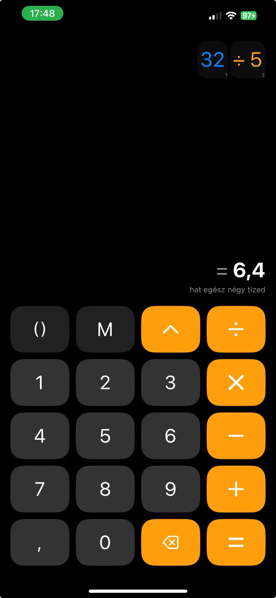

Precision & control · Beta
Calculio
An arbitrary-precision calculator with a fresh, block-based approach to building and editing equations.


Build, edit and calculate with confidence.
Calculio brings high-precision arithmetic and flexible equation editing together. Use it for quick everyday maths or longer calculations where precision matters.
Unlimited precision
Arbitrary-precision arithmetic avoids the limitations of standard floating-point calculations, helping you work with very large numbers and long decimal values.
Block-based equations
Numbers and operators appear as individual, editable blocks. If you made a mistake several steps back, tap that block and change it without retyping the entire equation or fighting with a cursor.
Why it’s different
- Arbitrary-precision arithmetic.
- Edit any part of an equation directly.
- A clear calculation flow that makes errors easier to spot and correct.
- Designed for work where accuracy matters.
The block-based approach makes complex calculations easier to build and revise, helping you stay focused on the result.